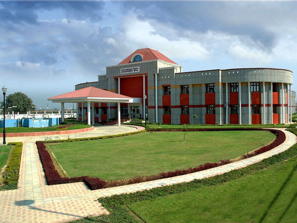

Located in one of the biggest industrial metropolis of state of Uttar Pradesh, Chhatrapati Shahu Ji Maharaj University stands as a hallmark of higher education. It is an educational community where students of various religions and cultural backgrounds study and work together in a congenial atmosphere. The university is geared to provide maximum scholastic benefit to each individual student.
Chhatrapati Shahu Ji Maharaj University, Kanpur has been on the map of higher education for more than five decades. Established in 1966, it has not looked back, now it has 952 affiliated colleges in 11 districts. Spreading over a campus of 264 acres, the university is booming with academic activities. While the undergraduate and post-graduate programmes in all disciplines of Art, Science, Commerce, Law, Engineering and Medicine are offered in affiliated colleges and institutions, the residential wing of the campus includes faculties of Life Sciences, Business Management, Education and English. It also has a department of Adult and Continuing Education, Communication and a College Development Council. For catering to the needs of young engineering aspirants, the university has recently started an Institute of Engineering and Technology in the campus offering courses in four branches of engineering viz. Chemical, Computer Science and Information, Mechanical Engineering in the first instance. The university seeks to contribute to student an education through curriculum design, the development of new courses and the application of a forward looking and innovative teaching methodology. Kanpur, the industrial capital of U.P. and commonly known as the Manchester of Northern India has had a very eventful history. It has contributed much to the growth and economic development of the country. Equally memorable and inspiring is its role in the first Indian War of Independence.
During its long history, Chhatrapati Shahu Ji Maharaj University has imparted education to hundreds of thousands of students who are providing their services as Doctors, Engineers, Social workers, Industrialists and in various other sections of the society. The students work as ambassadors of the university and several of them have earned fame in their respective fields owing to their dedication and hard work. As the years rolled on Chhatrapati Shahu Ji Maharaj University realized the need to bring all the alumni together so that their united constructive efforts could not only help the upcoming students in securing jobs but also various steps for upliftment of the society could be undertaken.
The energy of youth can be fully utilized if they get guidance from experienced alumnis and can achieve success for themselves and the society. It was therefore realized by Chhatrapati Shahu Ji Maharaj University to formally establish an Alumni Association which came into existence on 15th October 2018
Contact Us:Chhatrapati Shahu Ji Maharaj University, Kanpur(Formerly Kanpur University, Kanpur) Kalyanpur, Kanpur-208024 E-mail: csjmu@kanpuruniversity.org |
|---|